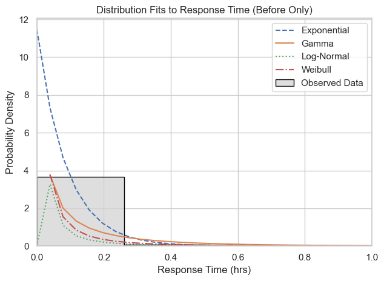
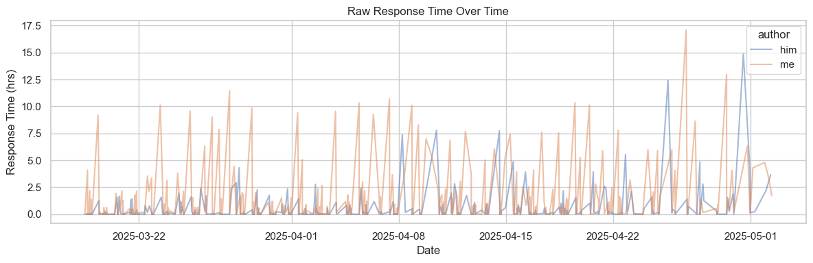
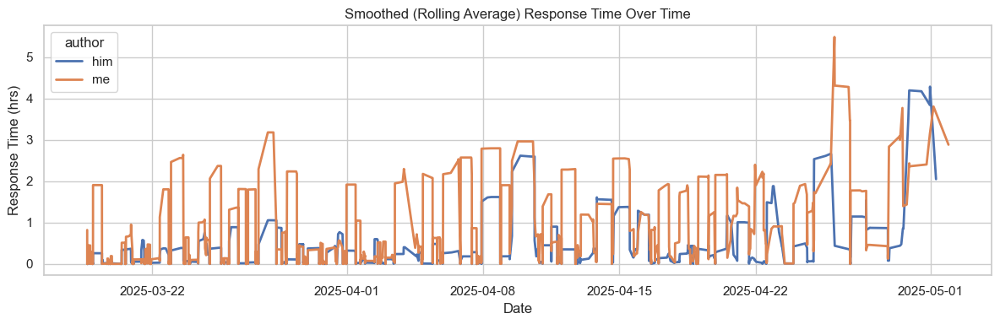
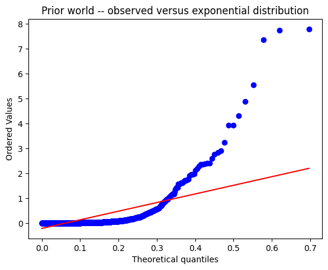

Introduction: Sometimes, you meet someone, and you really like them – you go on a few dates, and then you have to ask, “Do you want to be more than friends?” And then… you have a probability midterm next Wedneseday. I aim to understand whether a treatment – “Do you want to be more than friends” talk – had a statistically significant effect on awkwardness – which we operationalize as slower response time between messages.
Step 0: Descriptive Data Analysis 0A) Comparing average response time
replies['rolling_avg'] = replies['response_time_hrs'].rolling(window=5, center=True).mean()plt.figure(figsize=(12, 4))sns.lineplot(data=replies, x='Date', y='response_time_hrs', label='Response Time (hrs)', alpha=0.4)sns.lineplot(data=replies, x='Date', y='rolling_avg', label='5-msg Rolling Avg', linewidth=2)plt.title("Response Time Over Time")plt.ylabel("Hours Between Replies")plt.xlabel("Date")plt.tight_layout()plt.show()

0C) Response Time by Author over Time
Code
replies['author'] = replies['Author'] # for legend labelreplies['rolling_avg'] = ( replies.groupby('author')['response_time_hrs'] .transform(lambda x: x.rolling(window=5, center=True).mean()))plt.figure(figsize=(12, 4))sns.lineplot(data=replies, x='Date', y='response_time_hrs', hue='author', alpha=0.5)plt.title("Raw Response Time Over Time")plt.ylabel("Response Time (hrs)")plt.xlabel("Date")plt.tight_layout()plt.show()plt.figure(figsize=(12, 4))sns.lineplot(data=replies, x='Date', y='rolling_avg', hue='author', linewidth=2)plt.title("Smoothed (Rolling Average) Response Time Over Time")plt.ylabel("Response Time (hrs)")plt.xlabel("Date")plt.tight_layout()plt.show()


Step 1: Obtaining priors => What is the reply distribution before the treatment? Because we are measuring delays between replies, we model response times as exponentially distributed, which models the time between individual events.
1A) First, let’s figure out if our data actually is expontentially distributed (though this isn’t relevant to the course material yet, I’m just curious because I’m fairly sure it doesn’t make sense for response times to be memoryless. Though maybe that’d be a interesting way to detect whether people are just posting just to post versus actually having a conversation with someone else).
Code
before_data = his_replies[his_replies['period'] =='before']['response_time_hrs'].dropna()lambda_before =1/ before_data.mean()stats.probplot(before_data, dist=stats.expon(scale=1/lambda_before), plot=plt)plt.title("Prior world -- observed versus exponential distribution")plt.show()

1A - Quantile-quantile plot, this plot compares the quantiles of our data with the quantiles of some theoretical distribution (in this case, exponential distribution). This is a ‘heavy right tail’ pattern – first, we start close to the theoretical line (in other words, the short delays, quick replies are roughly exponential). The dip below the line – so medium delays are more uniform than expected if they were expontentially distributed. But then, we go way above the line – which indicates that the longer, rarer delays are much more extreme than expected. Anyways so this isn’t very good, but that’s real world data for you.
1B - Just for fun, let’s see if other distributions model the prior world better. How can we tell if one model fits better than another? In this case, we check the probability density functions for a bunch of candidate distributions. Because time is continuous, each random variable has a Probability Density Function, compared to discrete random variables, which have Probability Mass Functions. Probability Density Functions tell us the likelihood that a random variable takes on a value, instead of the probability of the random variable taking on any value.
Code
#round up millisecoond differences before_data = before_data.copy()before_data[before_data ==0] =1/3600# 1 second = 0.000277... hrs
1C - Conclusion: The Log-Normal distribution is the best model for our prior world.
Step 2) The goal of general inference is to change a belief distribution of random variables based on some observations. We want to know if we expect that our new observations (the post-treatment data) come from a different statistical distribution.
If p < 0.05, reject null → the after-data likely does not come from the before-distribution → treatment had an effect
If p > 0.05, fail to reject the null → might still be same distribution
The K-S statistic is the maximum distance between the two CDFs (cumulative distribution functions), the stat (D) ranges from 0 to 1 D = 0 → the two distributions are identical D > 0.2 → usually considered a substantial difference D > 0.3 → strong evidence the two distributions are not the same
2A) KS Stat being 0.3675, as well as p-value is 0, strongly indicates that the treatment had a statistically significant effect. 2B) As a robustness check, let’s do a permutation test to see if we can get a higher K-S stat just from randomly splitting the data.
Conclusion) Behavioral data is rarely so conclusive, but it is undeniable…. However, this is useful for Bayesian Inference later, if we keep on talking, and get back to a normal state (and ideally also get back into an awkward state) just to verify how good the model is. And then if I wanted to predict whether we were in ‘awkward’ or ‘normal’ mode.